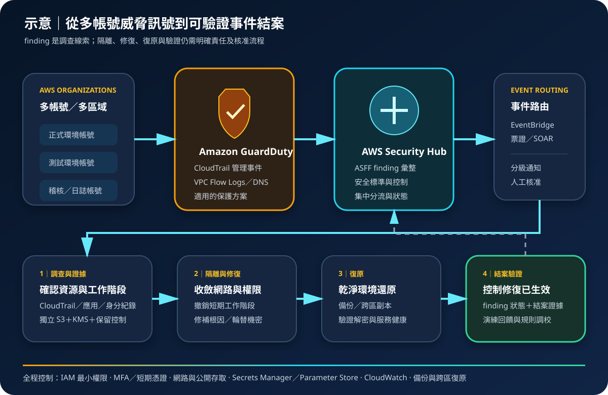

Amazon GuardDuty 與 Security Hub：威脅偵測與安全態勢管理
Amazon GuardDuty 分析 AWS 環境中的訊號以產生威脅發現項目；AWS Security Hub 彙整安全發現項目並執行安全標準檢查。兩者能縮短發現與分流時間，但不會自動完成所有調查、修補與復原。
作者：Dr. William｜查閱與發布：2026-09-10
服務定位
Amazon GuardDuty 是受管威脅偵測服務。它持續分析支援的 AWS 資料來源與已啟用保護方案，使用威脅情報、異常偵測及機器學習等方法識別可疑活動，再以具嚴重度、資源、行為與處置資訊的 finding 呈現。基礎資料來源包括 AWS CloudTrail 管理事件、VPC Flow Logs 與 DNS 查詢日誌；額外保護方案的可用性、資料來源與計費需依區域及當期文件確認。
AWS Security Hub 是雲端安全態勢管理與發現項目彙整服務。它可接收 AWS 服務、整合產品及自訂來源的安全發現項目，並依啟用的安全標準持續評估資源控制狀態。Security Hub 不等同 SIEM，也不會因顯示失敗控制或 GuardDuty finding 就自動修補資源；調查、例外管理、票證、回應自動化與驗證仍須另行設計。
核心概念
GuardDuty
- Finding：偵測結果包含類型、嚴重度、受影響資源、活動細節與建議動作；它是調查線索，不等同已確認入侵。
- 資料來源與保護方案：基礎訊號與 S3、EKS、Runtime Monitoring、Malware Protection、RDS、Lambda 等適用保護範圍應逐區域盤點。
- Detector：GuardDuty 以區域為基礎運作；多帳號環境可由 AWS Organizations 委派管理員集中管理成員與設定。
- 抑制與匯出：可依條件封存已知且可接受的 finding，或將 finding 匯出至受保護的 S3；抑制規則必須定期複核。
Security Hub
- 安全標準與控制：啟用標準後評估適用控制；失敗狀態代表需查核，不應只為提高分數而停用控制。
- ASFF：AWS Security Finding Format 提供一致欄位，協助彙整、篩選、關聯與自動化處理多個來源的 finding。
- 集中設定：多帳號及多區域治理可使用 Organizations、委派管理員與集中設定，但支援範圍及首頁區域仍須明確規劃。
- Workflow 與 Automation Rules：工作流程狀態與規則可協助分流、更新欄位或路由；更新狀態不表示根因已修復。
適合與不適合的使用情境
適合
- 多帳號 AWS 環境需要集中查看可疑 API、網路、工作負載、資料庫或物件儲存活動。
- 需要持續檢查 AWS 資源是否符合已選安全標準，並以一致格式交付風險與修復工作。
- 安全團隊希望把高嚴重度 finding 送往 EventBridge、票證、SOAR 或人工值班流程。
- 需要將 GuardDuty、Inspector、Macie、Firewall Manager 等適用來源的發現項目集中關聯與追蹤。
不適合或不能單獨完成
- 不能取代端點偵測、應用程式日誌、身分供應商紀錄、封包調查或跨雲 SIEM 的完整視野。
- finding 不是定罪證據；自動隔離、刪除或停權前仍須評估誤判、業務影響與復原路徑。
- Security Hub 合規分數不等於整體安全或法規合規，未納入的帳號、區域、資源與控制仍可能形成盲區。
- 只啟用服務而沒有值班責任、處理時限、證據保存與復原演練，不會形成有效事件應變能力。
示意故事案例：多帳號電商平台的威脅偵測與回應
以下為示意案例，不代表特定組織或正式部署。一家電商將正式、測試與稽核工作負載分散在 AWS Organizations 多個帳號。各受管區域啟用 GuardDuty 與經評估的保護方案，由安全帳號擔任委派管理員；Security Hub 在指定首頁區域彙整各區域 finding 與安全標準結果。某個應用角色突然從異常來源呼叫探索性 API，GuardDuty 產生高嚴重度 finding，Security Hub 以 ASFF 接收後由 EventBridge 路由至事件佇列。
值班人員先確認帳號、區域、角色工作階段、CloudTrail 證據與資源關聯，再依預先核准的手冊撤銷工作階段、隔離工作負載並輪替受影響機密。調查資料寫入限制存取且使用 KMS 加密的證據儲存區。CloudWatch 監控偵測與回應流程失敗；備份、跨區副本與乾淨環境用於還原。事件關閉前必須驗證根因、控制修復與服務正常，而不是只把 finding 狀態改成已解決。

建置與運作流程
- 建立治理範圍：列出 Organizations 帳號、AWS 區域、資料分類、關鍵工作負載、法規需求與 finding 處理時限。
- 配置委派管理：使用專用安全帳號擔任 GuardDuty 與 Security Hub 委派管理員，分離組織、偵測、調查與工作負載權限。
- 啟用區域與成員：在所有允許使用的區域確認 detector、成員關聯與自動加入策略，並偵測未受管的新帳號或區域。
- 選擇保護方案：依實際 S3、EKS、EC2、ECS、RDS、Lambda 等工作負載及成本啟用適用 GuardDuty 保護方案，不假設預設已全部涵蓋。
- 設定 Security Hub：選定首頁區域、連結區域、集中設定與必要安全標準，記錄不適用控制、原因、核准者與到期日。
- 設計最小權限：管理與調查採聯合登入、MFA、短期憑證、IAM 最小權限與職責分離；自動化角色只能執行核准動作。
- 建立回應管線：依來源、嚴重度、資產關鍵性與信心分流 finding，送往 EventBridge、票證或 SOAR；破壞性動作保留人工核准與回復方案。
- 保護證據與機密：finding 匯出、CloudTrail 與調查證據使用獨立 S3、KMS、不可變更或保留控制；機密僅存 Secrets Manager／Parameter Store。
- 監控服務健康：以 CloudWatch 與稽核查詢監控設定變更、成員缺口、事件路由失敗、長期未處理 finding 與異常抑制。
- 演練與改善：定期產生官方樣本 finding 或受控測試，驗證通知、調查、隔離、備份還原、跨區接手與結案證據。
成本與可用性考量
GuardDuty 費用通常依分析資料量、事件數、資源量或各保護方案的計量方式計收，且不同區域價格可能不同。Security Hub 費用通常涉及安全檢查數與擷取的 finding 數；來自部分 AWS 服務的 finding 可能依當期定價規則不另收擷取費。EventBridge、Lambda、S3、KMS、CloudWatch Logs、SIEM 與跨區傳輸仍可能分別計費。免費試用、免費額度與計價單位應以查閱日正式定價頁及帳單估算為準。
兩項服務皆有區域性設定與資料邊界。集中管理不代表每個區域自動啟用、每種保護方案自動一致，或 finding 可在所有區域無條件匯總。需以組織政策、基礎設施即程式碼與定期稽核驗證帳號及區域覆蓋率，並將服務可用性、事件路由與下游系統故障納入監控。
安全偵測不是工作負載備援。跨區復原仍需獨立規劃身分、網路、KMS 金鑰、資料副本、備份、DNS、觀測與應變權限。若主要安全區域或票證系統不可用，值班團隊應有唯讀查核、替代通知、證據保存與緊急處置程序。
GuardDuty 與 Security Hub 特有資安風險與控制
- 帳號或區域未納管：新帳號、停用區域或未加入成員形成偵測盲區。以 Organizations 自動啟用、允許區域清單、AWS Config 與週期性覆蓋報表比對。
- 保護方案誤判：GuardDuty 已啟用不代表 Runtime、S3、EKS、RDS、Lambda 或 Malware Protection 全部開啟。逐工作負載記錄必要方案、支援區域、代理或先決條件與驗證結果。
- finding 疲勞：大量低價值告警掩蓋真正事件。依資產關鍵性、嚴重度與行為建立分流，追蹤平均確認時間及逾期案件，而非大量靜默。
- 過度抑制：寬泛抑制或 Automation Rule 可能永久隱藏有效 finding。條件需最小化、具負責人及到期日，並對規則新增與命中量建立 CloudTrail／CloudWatch 告警。
- 誤用狀態欄位：把 workflow 設為 resolved 不代表資源已修復。結案須附根因、證據、修復變更、驗證結果及殘餘風險核准。
- 自動回應擴大事故：直接停用帳號、終止執行個體或改動網路可能中斷正式服務。自動化採最小權限、分級核准、乾跑模式、冪等與回復程序。
- 證據遭竄改或外洩：管理員可刪除 finding 匯出或調查日誌，內容也可能帶有敏感資源資訊。使用專用日誌帳號、S3 保留控制、KMS、物件版本、最小權限與存取稽核。
- 身分與機密外洩未根除：隔離資源後，遭竊工作階段或應用機密仍可能有效。撤銷工作階段、檢查 IAM 存取、輪替 Secrets Manager／Parameter Store 內容，且禁止長期 Access Key。
- 網路訊號不完整：加密應用內容、外部 DNS、第三方網路或未涵蓋工作負載可能降低可視性。結合應用、身分、端點與網路遙測，並維持私有子網路、Security Group 與公開存取控制。
- 跨區治理漂移：備援區域缺少偵測、標準、事件規則或解密權限。以版本化設定同步，定期執行跨區事件接手與備份還原演練。
共同責任邊界
AWS 負責 GuardDuty、Security Hub 受管服務與底層基礎設施的安全與運作，並依已啟用服務範圍分析支援訊號、執行控制評估及產生或處理 finding。客戶負責啟用正確帳號、區域、保護方案與標準，設定委派管理、判讀結果、調查根因、處理誤判、修補資源及驗證事件關閉。
客戶仍須落實 IAM 最小權限、MFA 與短期憑證、網路隔離與公開存取控制、適用的 KMS 加密、Secrets Manager／Parameter Store、CloudTrail／CloudWatch、備份與跨區復原。AWS 產生 finding 不代表已封鎖攻擊、完成法規合規、修補漏洞、輪替機密或恢復業務。
上線前可執行檢查清單
- □ Organizations 全部正式帳號、允許區域、委派管理員與 Security Hub 首頁區域已有版本化清冊。
- □ 每個帳號及區域的 GuardDuty detector、Security Hub、成員關聯與集中設定已實際查核。
- □ S3、EKS、Runtime、Malware、RDS、Lambda 等適用保護方案已依工作負載、區域與成本逐項決定。
- □ 安全標準與控制的啟用範圍已核准；停用或抑制均有理由、責任人、證據與到期日。
- □ 管理、調查與自動化角色採 IAM 最小權限、聯合登入、MFA、短期憑證與職責分離。
- □ 工作負載位於必要的網路邊界，公開存取已收斂；機密僅存 Secrets Manager／Parameter Store。
- □ finding、CloudTrail、應用與網路證據集中保存，使用 KMS 加密、保留控制與獨立存取稽核。
- □ CloudWatch 能告警服務停用、設定變更、路由失敗、異常抑制與高嚴重度 finding 未確認。
- □ EventBridge、票證或 SOAR 規則已測試重送、重複事件、失敗佇列、人工核准、冪等與回復。
- □ 已用官方樣本或受控情境演練調查、隔離、工作階段撤銷、機密輪替、根因修復與結案驗證。
- □ 已估算各區域 GuardDuty 保護方案、Security Hub 檢查與 finding、日誌、KMS、運算及資料傳輸成本。
- □ 備份與跨區復原包含安全設定、解密權限、替代通知、乾淨還原環境，且已完成實際演練。
AWS 官方一手來源
- Amazon GuardDuty User Guide｜What is Amazon GuardDuty?（查閱：2026-09-10）
- GuardDuty foundational data sources（查閱：2026-09-10）
- Security in Amazon GuardDuty（查閱：2026-09-10）
- AWS Security Hub User Guide｜What is AWS Security Hub?（查閱：2026-09-10）
- Security standards and controls in AWS Security Hub（查閱：2026-09-10）
- Findings in AWS Security Hub（查閱：2026-09-10）
- Amazon GuardDuty pricing（查閱：2026-09-10）
- AWS Security Hub pricing（查閱：2026-09-10）
內容說明
本文依查閱日可用的 AWS 官方文件整理，作為基礎學習與架構討論材料；實際部署仍須依支援區域、保護方案、功能、最新價格與配額、組織政策、法規、資料落地要求及風險評估調整。